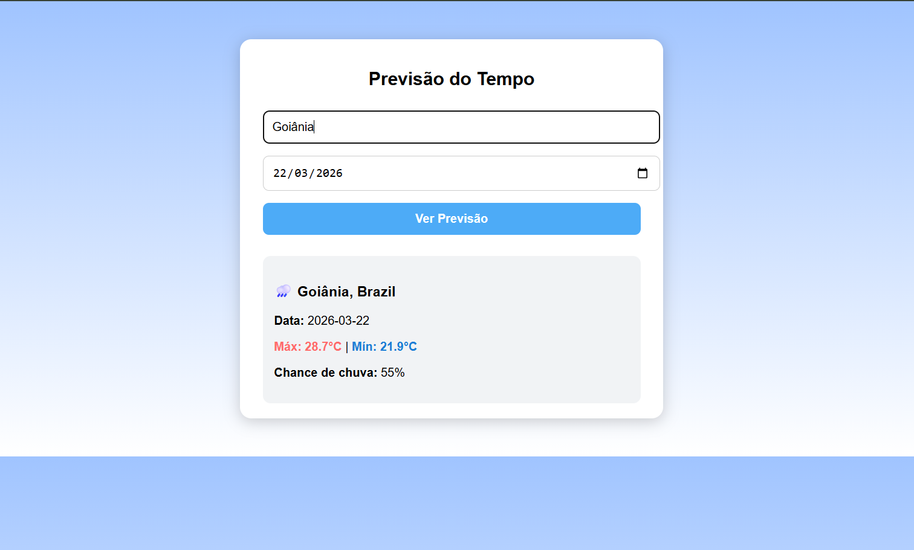
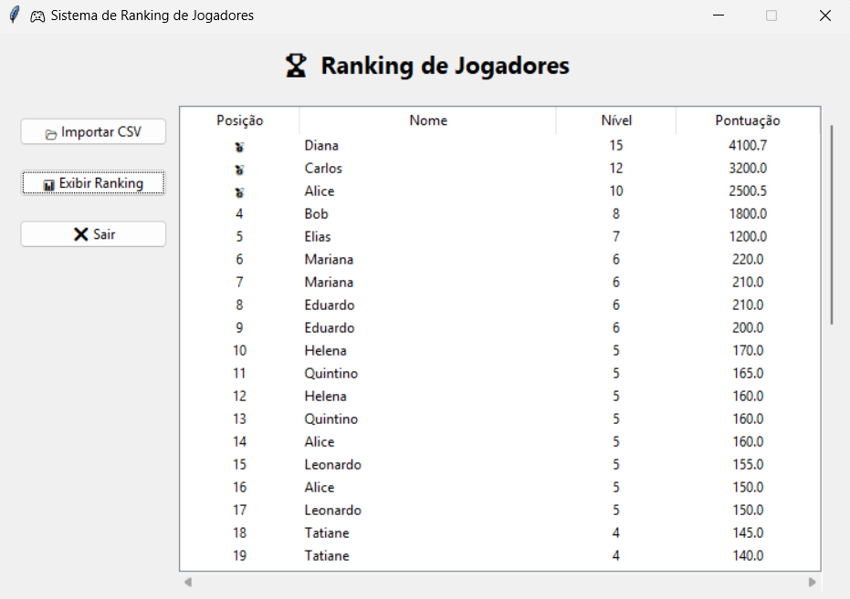
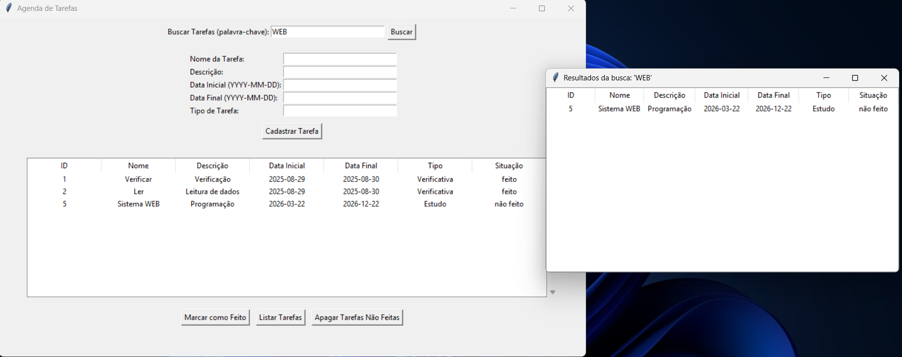

Letícia Barros
Developer 💻 | Information Systems
Sobre mim
Olá! Sou Letícia, desenvolvedora Full Stack em formação e graduanda em Sistemas de Informação. Tenho interesse em desenvolvimento web, APIs e construção de sistemas completos, desde o backend até a interface. Busco constantemente evoluir através de projetos práticos e boas práticas de desenvolvimento.
Projetos

Aplicação web com API
Previsão do Tempo
Aplicação web para consulta de clima por cidade, ...ver mais

Ranking com destaque para TOP 3
Ranking de Jogadores
Sistema que importa CSV e gera ranking com interface gráfica, ...ver mais

Sistema desktop com interface gráfica
Sistema de Tarefas
Sistema em Python para gerenciamento de tarefas com interface gráfica e banco de dados, ...ver mais
Contato
Email: leticiadeoliveirabarros12@gmail.com